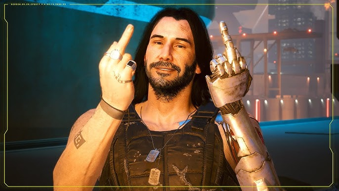

Johnny Silverhand: The Rebellious Rockstar of Cyberpunk
Created by: Valerie [redacted]
Johnny Silverhand is a central character in the Cyberpunk universe, known for his rebellious nature and rockstar persona. As the lead singer of the band Samurai, he became a symbol of resistance against the oppressive corporations that dominate the world. His music and actions inspired many to fight for their freedom and question the status quo.
Beyond his musical career, Johnny Silverhand is also known for his involvement in various anti-corporate activities. He is particularly famous for his role in the attack on Arasaka Tower, an event that had significant repercussions in the Cyberpunk world. His relentless pursuit of justice and his willingness to take extreme measures made him a controversial yet influential figure.
Despite his rebellious exterior, Johnny Silverhand is a complex character with a deep sense of loyalty and a strong moral compass. His interactions with other characters reveal a man who is haunted by his past but driven by a desire to make a difference. His legacy continues to impact the world of Cyberpunk, making him an enduring icon in the fight against corporate tyranny.
